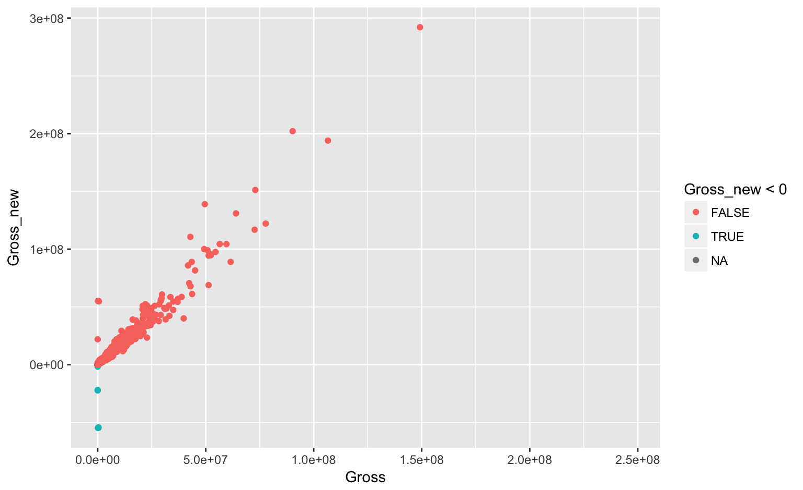
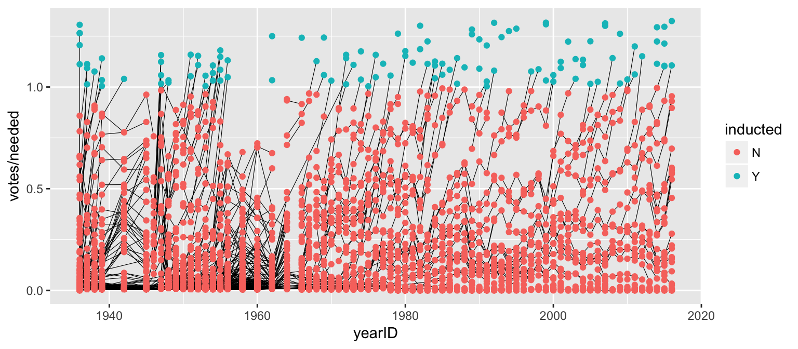
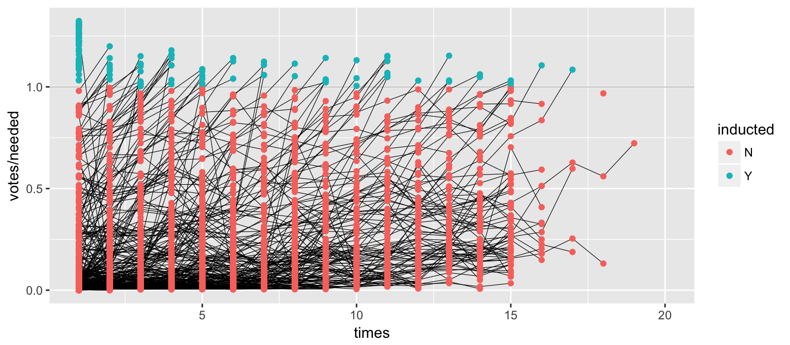
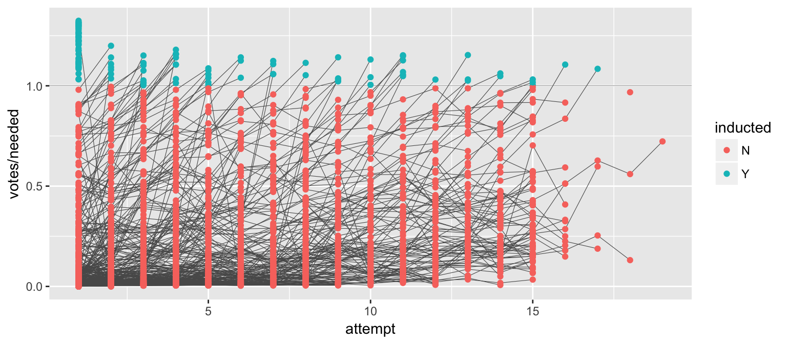
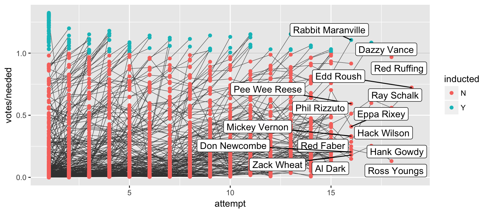

Messy (3)
Messy (3): Multiple observational units are stored in the same table.
What does that mean? The key is split, i.e. for some values all key variables are necessary, while other values only need some key variables.

100 patients are randomly assigned to a treatment for heart attack, measured 5 different clinical outcomes.
100 patients are randomly assigned to a treatment for heart attack, measured 5 different clinical outcomes.
Randomized complete block trial with four fields, four different types of fertilizer, over four years. Recorded total corn yield, and fertilizer run off
Randomized complete block trial with four fields, four different types of fertilizer, over four years. Recorded total corn yield, and fertilizer run off
Cluster sample of twenty students in thirty different schools. For each school, recorded distance from ice rink. For each student, asked how often they go ice skating, and whether or not their parents like ice skating
Cluster sample of twenty students in thirty different schools. For each school, recorded distance from ice rink. For each student, asked how often they go ice skating, and whether or not their parents like ice skating
For each person, recorded age, sex, height and target weight, and then at multiple times recorded their weight
For each person, recorded age, sex, height and target weight, and then at multiple times recorded their weight
only patient ID is needed for variables in italics
Messy (3): Multiple observational units are stored in the same table.
What does that mean? The key is split, i.e. for some values all key variables are necessary, while other values only need some key variables.
Splitting into separate datasets:

The-Numbers website publishes weekly charts of the gross income of all movies playing across the US. A set of scraped data with movies for the last two years is available in the repo.
## Rank Rank.Last.Week Movie Distributor
## 1 1 (1) Split Universal
## 2 2 new A Dog’s Purpose Universal
## 3 3 (3) Hidden Figures 20th Century Fox
## 4 4 new Resident Evil: The Final Ch… Sony Pictures
## Gross Change Thtrs. Per.Thtr. Total.Gross Days date
## 1 $25,655,440 -36% 3199 $8,020 $77,385,530 10 2017-01-27
## 2 $18,222,810 <NA> 3059 $5,957 $18,222,810 3 2017-01-27
## 3 $14,003,275 -11% 3351 $4,179 $104,024,969 36 2017-01-27
## 4 $13,601,682 <NA> 3104 $4,382 $13,601,682 3 2017-01-27What are the key variables? Why is the key split?
box <- box %>% mutate(
Gross = parse_number(Gross),
Total.Gross = parse_number(Total.Gross),
Days = parse_number(Days),
Thtrs. = parse_number(Thtrs.)
) Movie name, Rank, Date and Distributor.# if we get an error with a message about the length of a dataset
# we know we have a problem
movie <- box %>% group_by(Movie) %>% summarize(
Distributor = unique(Distributor)
)Error: expecting a single value
Bingo! but what now?
box %>% group_by(Movie) %>% summarize(
Distributor = length(unique(Distributor))
) %>% arrange(desc(Distributor))## # A tibble: 1,386 x 2
## Movie Distributor
## <fctr> <int>
## 1 Girlhood 2
## 2 The Witness 2
## 3 ’71 1
## 4 1,000 Rupee Note 1
## 5 10 Cloverfield Lane 1
## 6 10 Days in a Madhouse 1
## 7 13 Hours: The Secret Soldie… 1
## 8 1915 1
## 9 2015 Oscar Shorts 1
## 10 2016 Oscar Shorts 1
## # ... with 1,376 more rowsThe movie Girlhood has two distributors: " " and Strand - i.e. the first week the distributor is missing, let’s fix that:
box <- box %>% mutate(
Distributor = replace(Distributor, Movie=="Girlhood", "Strand")
)The movie The Witness is actually two different movies, one that came out in October 2015, another one that came out in June 2016. Movie name by itself is not a key. Let’s derive the release date for each movie:
box <- box %>% mutate(Release = lubridate::ymd(date)-Days)movie <- box %>% group_by(Movie, Release) %>% summarize(
Distributor = unique(Distributor)
)
dim(movie)## [1] 1406 3length(unique(box$Movie))## [1] 1386Still not quite right - the number of days is a derived variable, and is not quite consistent.
movie %>% group_by(Movie) %>% count() %>% arrange(desc(n)) %>% head(5)## # A tibble: 5 x 2
## Movie n
## <fctr> <int>
## 1 Hot Water 3
## 2 3 Hearts 2
## 3 Beyond the Mask 2
## 4 Boy Meets Girl 2
## 5 Boychoir 2movie %>% filter(Movie =="Hot Water")## Source: local data frame [3 x 3]
## Groups: Movie [1]
##
## # A tibble: 3 x 3
## Movie Release Distributor
## <fctr> <date> <fctr>
## 1 Hot Water 2016-03-04 Indican Pictures
## 2 Hot Water 2016-04-22 Indican Pictures
## 3 Hot Water 2016-05-02 Indican Pictures# introduce release date for each movie and distributor separately
box <- box %>% group_by(Movie, Distributor) %>%
mutate(
Release = min(lubridate::ymd(date))-Days[which.min(lubridate::ymd(date))]
)
# split again
movie <- box %>% group_by(Movie, Release) %>% summarize(
Distributor = unique(Distributor)
)
dim(movie)## [1] 1387 3length(unique(box$Movie)) # should be one less than above (b/c The Witness)## [1] 1386Better!
%Change, Rank last week, Days, Gross Per Theater.Total.Gross strictly increasing? And does Gross match with the differences from one week to the next?How much of this can you do in 10 mins?

# days and per theatre gross:
box <- box %>% ungroup() %>% mutate(
Days_new = lubridate::ymd(date) - lubridate::ymd(Release),
Per.Theater = Gross/Thtrs.
)
box %>% select(Movie, Days, Days_new)## # A tibble: 10,327 x 3
## Movie Days Days_new
## <fctr> <dbl> <time>
## 1 Split 10 10 days
## 2 A Dog’s Purpose 3 3 days
## 3 Hidden Figures 36 36 days
## 4 Resident Evil: The Final Ch… 3 3 days
## 5 La La Land 52 52 days
## 6 xXx: Return of Xander Cage 10 10 days
## 7 Sing 40 40 days
## 8 Rogue One: A Star Wars Story 45 45 days
## 9 Monster Trucks 17 17 days
## 10 Gold 3 3 days
## # ... with 10,317 more rows# introduce change variable and rank-last-week:
box <- box %>% group_by(Movie, Release) %>% arrange(date) %>% mutate(
Change = c(NA, diff(Gross)/Gross[-length(Gross)])*100,
Rank.Last.Week_new = c(NA, Rank[-length(Rank)]),
Days_diff = c(NA, diff(Days_new))
)
# some of these ranks are not from last week:
box <- box %>% mutate(
Rank.Last.Week_new = replace(Rank.Last.Week_new, Days_diff != 7, NA)
)
box %>% filter(Movie=="3 Hearts") %>% arrange(Days_new) %>% as.data.frame() %>% head(3)## Rank Rank.Last.Week Movie Distributor Gross Change Thtrs.
## 1 68 new 3 Hearts Cohen Media Group 11336 NA 4
## 2 70 (68) 3 Hearts Cohen Media Group 4243 -62.57057 4
## 3 66 new 3 Hearts Cohen Media Group 11794 177.96370 1
## Per.Thtr. Total.Gross Days date Release Days_new Per.Theater
## 1 $2,834 11336 7 2015-02-13 2015-02-06 7 days 2834.00
## 2 $1,061 21942 14 2015-02-20 2015-02-06 14 days 1060.75
## 3 $11,794 33736 3 2015-03-13 2015-02-06 35 days 11794.00
## Rank.Last.Week_new Days_diff
## 1 NA NA
## 2 68 7
## 3 NA 21box <- box %>% group_by(Movie, Release) %>%
arrange(Days) %>% mutate(
Gross_new = c(NA, diff(Total.Gross))
)
box %>%
ggplot(aes(Gross, Gross_new, colour = Gross_new < 0)) + geom_point()## Warning: Removed 1387 rows containing missing values (geom_point).
box %>% ungroup() %>% filter(Gross_new <0) %>% select(Movie, date, Gross, Gross_new, Total.Gross) %>% arrange(Gross_new)## # A tibble: 34 x 5
## Movie date Gross Gross_new Total.Gross
## <fctr> <fctr> <dbl> <dbl> <dbl>
## 1 The Hunger Games: Mockingja… 2016-02-12 308370 -54787187 281340856
## 2 The Hunger Games: Mockingja… 2016-02-19 192870 -54744318 281666058
## 3 The Hunger Games: Mockingja… 2016-02-05 162227 -54728905 280976000
## 4 The Hunger Games: Mockingja… 2016-01-29 380044 -54280391 280847534
## 5 The Lion in Winter 2017-01-20 692 -22275822 18177
## 6 Born to be Wild 3D 2015-10-30 1010 -21957516 2439919
## 7 Daughters of the Dust (Re-I… 2016-12-02 7232 -1641815 40465
## 8 The Battle of Algiers 2016-12-02 725 -798615 55102
## 9 Army of Shadows 2015-11-20 1946 -722470 27396
## 10 The Third Man 2015-11-06 572 -559097 445344
## # ... with 24 more rowsNow we have finally a clean data set and could get started on an analysis!
Can you predict the Total Gross of a movie based on the opening weekend and the second week?
This is the dataset we used for lab #2.
Messy (4): Values for a single observational unit are stored across multiple tables.
After data are normalized by splitting, we want to de-normalize again by joining datasets.
Sean Lahman is a database journalist, who started databases of historical sports statistics, in particular, the Lahman database on baseball.
library(Lahman)
LahmanData## file class nobs nvar title
## 1 AllstarFull data.frame 4993 8 AllstarFull table
## 2 Appearances data.frame 99466 21 Appearances table
## 3 AwardsManagers data.frame 171 6 AwardsManagers table
## 4 AwardsPlayers data.frame 6026 6 AwardsPlayers table
## 5 AwardsShareManagers data.frame 401 7 AwardsShareManagers table
## 6 AwardsSharePlayers data.frame 6705 7 AwardsSharePlayers table
## 7 Batting data.frame 99846 22 Batting table
## 8 BattingPost data.frame 11294 22 BattingPost table
## 9 CollegePlaying data.frame 17350 3 CollegePlaying table
## 10 Fielding data.frame 167938 18 Fielding table
## 11 FieldingOF data.frame 12028 6 FieldingOF table
## 12 FieldingPost data.frame 11924 17 FieldingPost data
## 13 HallOfFame data.frame 4088 9 Hall of Fame Voting Data
## 14 Managers data.frame 3370 10 Managers table
## 15 ManagersHalf data.frame 93 10 ManagersHalf table
## 16 Master data.frame 18589 26 Master table
## 17 Pitching data.frame 43330 30 Pitching table
## 18 PitchingPost data.frame 4945 30 PitchingPost table
## 19 Salaries data.frame 24758 5 Salaries table
## 20 Schools data.frame 1207 5 Schools table
## 21 SeriesPost data.frame 298 9 SeriesPost table
## 22 Teams data.frame 2775 48 Teams table
## 23 TeamsFranchises data.frame 120 4 TeamFranchises table
## 24 TeamsHalf data.frame 52 10 TeamsHalf tableThe Lahman database consists of 24 data frames that are linked by playerID.
This is clean, but not very readable.
The Master table includes names and other attributes for each player.
Joining multiple tables helps us to bring together (pieces of) information from multiple sources.
HallOfFame <- HallOfFame %>% group_by(playerID) %>%
mutate(times = order(yearID))
HallOfFame %>%
ggplot(aes(x = yearID, y = votes/needed, colour = inducted)) +
geom_hline(yintercept = 1, colour = "grey20", size = .1) +
geom_line(aes(group = playerID), colour = "black", size = 0.2) +
geom_point() 
We’d like to label all the last attempts - and not just with the playerID
HallOfFame %>%
ggplot(aes(x = times, y = votes/needed, colour = inducted)) +
geom_hline(yintercept = 1, colour = "grey20", size = .1) +
geom_line(aes(group = playerID), colour = "black", size = 0.2) +
geom_point() 

dplyr there are various join functions: left_join, inner_join, full_join, …df1 <- data.frame(id = 1:6, trt = rep(c("A", "B", "C"), rep=c(2,1,3)), value = c(5,3,7,1,2,3))
df1## id trt value
## 1 1 A 5
## 2 2 B 3
## 3 3 C 7
## 4 4 A 1
## 5 5 B 2
## 6 6 C 3df2 <- data.frame(id=c(4,4,5,5,7,7), stress=rep(c(0,1), 3), bpm = c(65, 125, 74, 136, 48, 110))
df2## id stress bpm
## 1 4 0 65
## 2 4 1 125
## 3 5 0 74
## 4 5 1 136
## 5 7 0 48
## 6 7 1 110NAright_join works symmetricleft_join(df1, df2, by="id")## id trt value stress bpm
## 1 1 A 5 NA NA
## 2 2 B 3 NA NA
## 3 3 C 7 NA NA
## 4 4 A 1 0 65
## 5 4 A 1 1 125
## 6 5 B 2 0 74
## 7 5 B 2 1 136
## 8 6 C 3 NA NAinner_join(df1, df2, by = "id")## id trt value stress bpm
## 1 4 A 1 0 65
## 2 4 A 1 1 125
## 3 5 B 2 0 74
## 4 5 B 2 1 136NAfull_join(df1, df2, by = "id")## id trt value stress bpm
## 1 1 A 5 NA NA
## 2 2 B 3 NA NA
## 3 3 C 7 NA NA
## 4 4 A 1 0 65
## 5 4 A 1 1 125
## 6 5 B 2 0 74
## 7 5 B 2 1 136
## 8 6 C 3 NA NA
## 9 7 <NA> NA 0 48
## 10 7 <NA> NA 1 110by = c("ID", "Date")by = c("State" = "Name")anti_joindplyranti_join(df1, df2, by="id") # no values for id in df2## id trt value
## 1 6 C 3
## 2 3 C 7
## 3 2 B 3
## 4 1 A 5anti_join(df2, df1, by="id") # no values for id in df1## id stress bpm
## 1 7 0 48
## 2 7 1 110
Lahman package into your R session.Master data set and the HallOfFame data.ggplot2 chart label all last attempts of individuals with 15 or more attempts. Make sure to deal with missing values appropriately.Not all organizations involved in inducting worthy candidates into the Hall of Fame take votes.
We will take only voters into consideration:
Voted <- HallOfFame %>% filter(!is.na(ballots)) %>%
group_by(playerID) %>% arrange(yearID) %>%
mutate( attempt = order(yearID))
dim(Voted)## [1] 3927 11Voted <- left_join(Voted, Master %>% select(playerID, nameFirst, nameLast),
by = "playerID")
dim(Voted)## [1] 3927 13Voted %>% ggplot(aes(x = attempt, y = votes/needed)) +
geom_hline(yintercept = 1, colour = "grey25", size = 0.1) +
geom_line(aes(group = playerID), colour = "grey35", size = 0.2) +
geom_point(aes(colour = inducted))
labels <- Voted %>% group_by(playerID) %>% summarize(
votes = votes[which.max(attempt)],
needed = needed[which.max(attempt)],
attempt = max(attempt),
name = paste(unique(nameFirst), unique(nameLast))
)